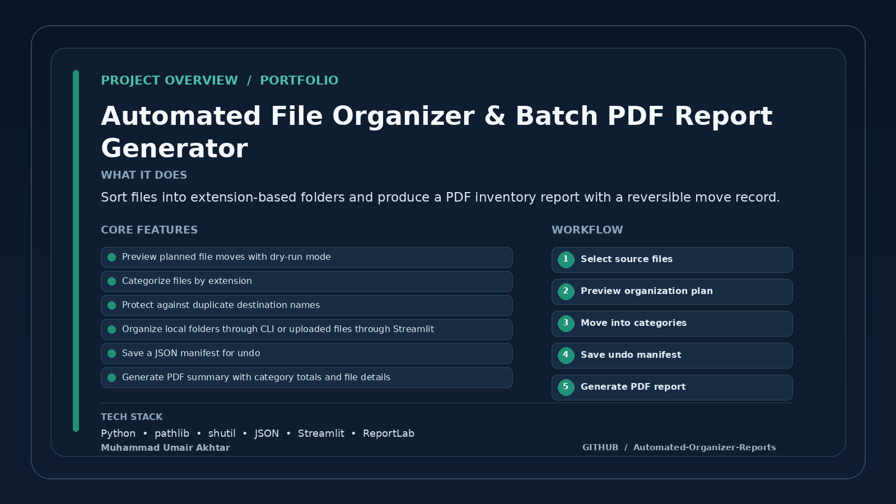

PROJECT 02 / PORTFOLIO
Automated File Organizer & Batch PDF Report Generator
Sort files into extension-based folders and produce a PDF inventory report with a reversible move record.

Project Overview
Sort files into extension-based folders and produce a PDF inventory report with a reversible move record.
Key Features
- Preview planned file moves with dry-run mode
- Categorize files by extension
- Protect against duplicate destination names
- Organize local folders through CLI or uploaded files through Streamlit
- Save a JSON manifest for undo
- Generate PDF summary with category totals and file details
Project Workflow
Select source files → Preview organization plan → Move into categories → Save undo manifest → Generate PDF report
Technologies Used
Scope & Notes
Review the preview before applying file moves. Test on copies of important files first.
Explore the code.
The complete source code and project files are available in the GitHub repository.
Open GitHub ↗